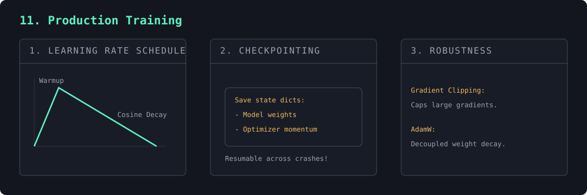

A bare loop won't survive a multi-day run. This adds resumable checkpoints (model + optimizer + step), a learning-rate schedule (warmup then cosine decay), gradient clipping, and best-model tracking.
Run it once, stop, run it again — it picks up exactly where it left off. That's how real training survives crashes and restarts.
Real training needs more than a loop. A learning-rate schedule — a linear warmup followed by cosine decay — starts small to avoid instability when early gradients are large and poorly conditioned, then anneals to refine the solution. Gradient clipping caps the gradient norm so a single pathological batch can't blow the weights to infinity.
Checkpointing the model, optimizer state, and step count makes a run resumable — essential for multi-day training and crash recovery — while tracking the best validation loss guards against overfitting. AdamW decouples weight decay from the gradient update, a small change that consistently improves generalization. These are the unglamorous details that separate a toy loop from a real training run.

no checkpoint found - starting fresh iter 0 lr 3.0e-05 train 4.365 iter 1500 train 1.599 val 1.757 # next run: resumed from train_ckpt.pt at iter 1500
"""
#11 in the "NN to tiny LLM" ladder.
#9 trained with a bare loop. Real training needs a few more things so you can
run for hours, stop, and pick up where you left off without losing work. This
script adds the standard production machinery on top of #9's model:
- RESUMABLE CHECKPOINTS : save model + optimizer + iteration number. Re-run
the script and it CONTINUES instead of restarting.
(Run it a few times to watch the loss keep dropping.)
- LR SCHEDULE : linear WARMUP then COSINE DECAY. Starting slow and
easing off near the end trains more stably than a
flat learning rate.
- GRADIENT CLIPPING : cap the gradient size so one bad batch can't blow
up the weights.
- BEST-MODEL TRACKING : separately save the checkpoint with the lowest
validation loss, not just the latest.
We reuse the TinyGPT model, tokenizer, and batching from #9 — this file is only
about the TRAINING LOOP, not the architecture.
Run with: python 11_train_loop.py (run it again to resume training)
"""
import importlib.util
import math
import os
import torch
# Reuse everything from #9 (digit-prefixed filename -> load as a module).
spec = importlib.util.spec_from_file_location("tiny_gpt", "09_tiny_gpt.py")
tg = importlib.util.module_from_spec(spec)
spec.loader.exec_module(tg)
DEVICE = tg.DEVICE
# ---- Training config ----
TARGET_ITERS = 1500 # total iterations to reach (across all runs)
WARMUP_ITERS = 100 # ramp LR up over the first N steps
MAX_LR = 3e-3
MIN_LR = 3e-4
EVAL_INTERVAL = 250
GRAD_CLIP = 1.0
CKPT_PATH = "train_ckpt.pt" # full training state (resumable)
BEST_PATH = "train_best.pt" # lowest-val-loss weights only
def get_lr(it):
"""Linear warmup for WARMUP_ITERS, then cosine decay down to MIN_LR."""
if it < WARMUP_ITERS:
return MAX_LR * (it + 1) / WARMUP_ITERS
# Cosine decay from MAX_LR -> MIN_LR over the remaining iterations.
progress = (it - WARMUP_ITERS) / max(1, TARGET_ITERS - WARMUP_ITERS)
coeff = 0.5 * (1 + math.cos(math.pi * min(progress, 1.0)))
return MIN_LR + coeff * (MAX_LR - MIN_LR)
def save_checkpoint(model, optimizer, it, best_val):
torch.save({
"model": model.state_dict(),
"optimizer": optimizer.state_dict(),
"iter": it,
"best_val": best_val,
"chars": tg.chars,
}, CKPT_PATH)
def main():
model = tg.TinyGPT().to(DEVICE)
optimizer = torch.optim.AdamW(model.parameters(), lr=MAX_LR)
start_iter, best_val = 0, float("inf")
# --- Resume if a checkpoint exists ---
if os.path.exists(CKPT_PATH):
ckpt = torch.load(CKPT_PATH, map_location=DEVICE)
model.load_state_dict(ckpt["model"])
optimizer.load_state_dict(ckpt["optimizer"])
start_iter = ckpt["iter"]
best_val = ckpt["best_val"]
print(f"resumed from {CKPT_PATH} at iter {start_iter} "
f"(best val {best_val:.3f})")
else:
print("no checkpoint found — starting fresh")
if start_iter >= TARGET_ITERS:
print(f"already trained to {start_iter} >= target {TARGET_ITERS}. "
f"Increase TARGET_ITERS or delete {CKPT_PATH} to train more.")
return
print(f"training iters {start_iter} -> {TARGET_ITERS}\n")
for it in range(start_iter, TARGET_ITERS):
# Set this step's learning rate from the schedule.
lr = get_lr(it)
for group in optimizer.param_groups:
group["lr"] = lr
if it % EVAL_INTERVAL == 0:
losses = tg.estimate_loss(model)
print(f"iter {it:4d} lr {lr:.1e} "
f"train {losses['train']:.3f} val {losses['val']:.3f}")
# Keep the best-on-validation weights separately.
if losses["val"] < best_val:
best_val = losses["val"]
torch.save({"model": model.state_dict(), "chars": tg.chars},
BEST_PATH)
x, y = tg.get_batch(tg.train_data)
_, loss = model(x, y)
optimizer.zero_grad(set_to_none=True)
loss.backward()
# Clip gradients so a single bad batch can't destabilize training.
torch.nn.utils.clip_grad_norm_(model.parameters(), GRAD_CLIP)
optimizer.step()
# Final eval + save so the next run resumes from here.
losses = tg.estimate_loss(model)
print(f"iter {TARGET_ITERS:4d} train {losses['train']:.3f} "
f"val {losses['val']:.3f}")
if losses["val"] < best_val:
best_val = losses["val"]
torch.save({"model": model.state_dict(), "chars": tg.chars}, BEST_PATH)
save_checkpoint(model, optimizer, TARGET_ITERS, best_val)
print(f"\nsaved resumable state -> {CKPT_PATH}")
print(f"saved best (val {best_val:.3f}) -> {BEST_PATH}")
if __name__ == "__main__":
main()